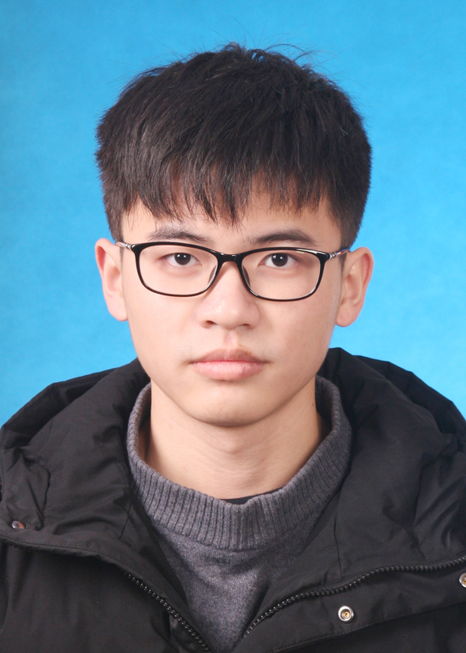

|  | 劉 浩文（りゅう こうぶん） |
ジャーナル：
[1] Jie Chen, Lantian Mi, Chao Ping Chen, Haowen Liu, Jinghui Jiang, and Wenbo Zhang, "Design of foveated contact lens display for augmented reality,” Optics Express (OE), Vol.27, No.26, pp. 38204-38219, 2019. [PDF]
カンファレンス：
[1] Jie Chen, Lantian Mi, Chao Ping Chen, Haowen Liu, Jinghui Jiang, Wenbo Zhang, and Yuan Liu “A foveated contact lens display for augmented reality,” Proc. SPIE, Optical Architectures for Displays and Sensing in Augmented, Virtual, and Mixed Reality (AR, VR, MR) (SPIE AR VR MR), in San Francisco, California, United States, 2020. (Oral) [PDF]